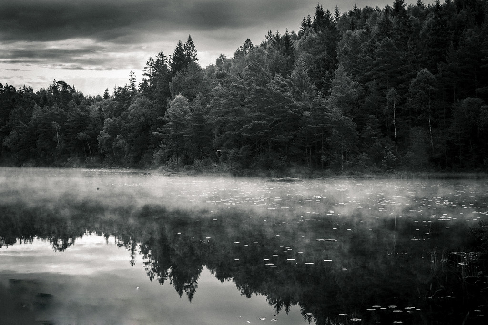

LILLA LÖVSJÖN

Lilla Lövsjön är ett ”put and take” vatten med regnbåge ämnat endast för flugfiske.
Sjön ligger några kilometer norr om Gråbo och här har man möjlighet att fiska i en vacker omgivning där naturupplevelsen står i centrum. Lilla Lövsjön erbjuder ett flertal fina vadningsställen och har även ett par sandstränder. Här finns ett vindskydd för den som vill övernatta och ett par iordningställda eldplatser.